transformer论文笔记
训练快
纯注意力机制
rnn时序，难以并行
用卷积神经网络对比较长的序列难以建模，卷积做计算的时候，每次看一个比较小的窗口，如果两个像素离得很远，需要很多层才能看到，但一个好的地方是，可以做多个输出通道，一个输出通道可以认为是去识别不同的模式 -> Multi-Head Attention
解码的时候只能一个个地生成：auto-regressive自回归
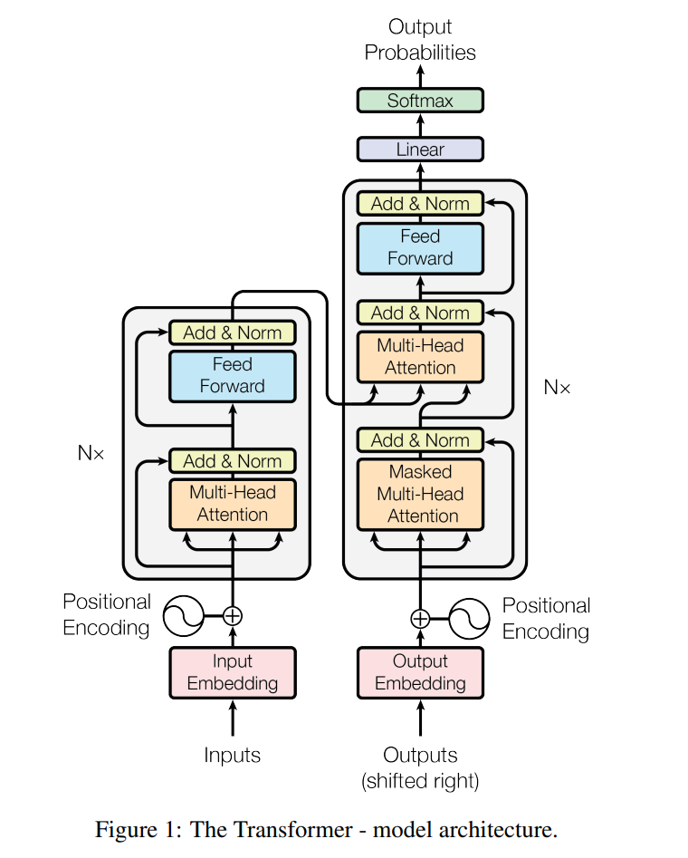Add连过去的作为残差连接
一个layer（block）两个子层：multi-head self-attention mechanism + simple, position-wise fully connected feed-forward network
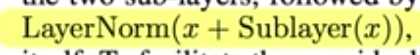残差连接，因为要保证维度一样，每一层都固定512
batch norm VS LayerNorm
batch norm：
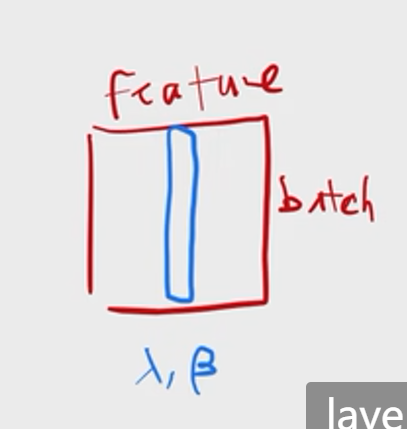二维输入，每一行是一个样本，每一列是一个特征
整个数据扫一遍后，所有数据的均值方差存起来，预测的时候用
预测的时候会计算全局的均值
batch norm还会学一个 出来，通过学习放成任意均值、方差
对于高维的：
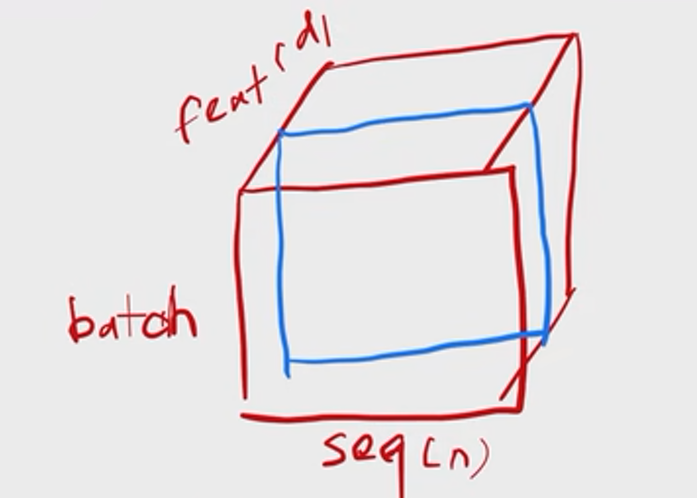蓝色的切出来，拉成一条，做均值方差
layer norm：
对每一行做均值为0，方差为1
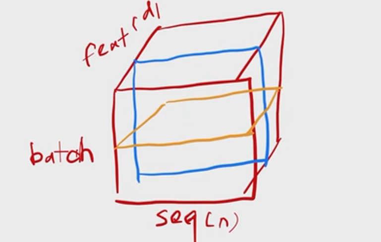黄色的切法
layer norm用的比较多，因为时序模型中，样本的长度可能会发生变化
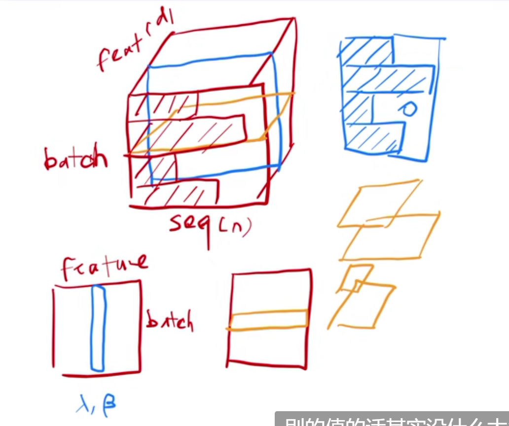蓝色画阴影的是有效值。样本长度变化比较大时，做小批量时，算出来的均值方差抖动比较大。且做预测前要把全局的均值方差记录下来，如果碰到一个新的预测样本特别长，之前算的均值方差不太好用。
但对于layer norm是每个样本自己算均值和方差，不需要存全局的均值方差，稳定一些
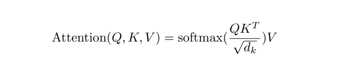 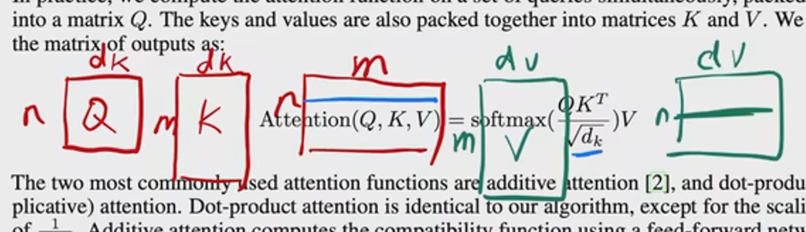: n× ，K：m× ，n个样本，n个query，就是一个 n×m的矩阵，每一行是一个query与其他所有key的内积值，除以根号 再做softmax。softmax是分别对每一行做，行与行之间是独立的，得到权重
再乘 V 后，得到 n× 的输出，每一行是一个输出
不是很大时，除不除无所谓，当 比较大时，两个向量比较长，做点积，结果可能很大，值相对的差距会变大，做softmax后就有可能有值接近1，剩下的值会更靠近0，算梯度时会比较小，会跑不动
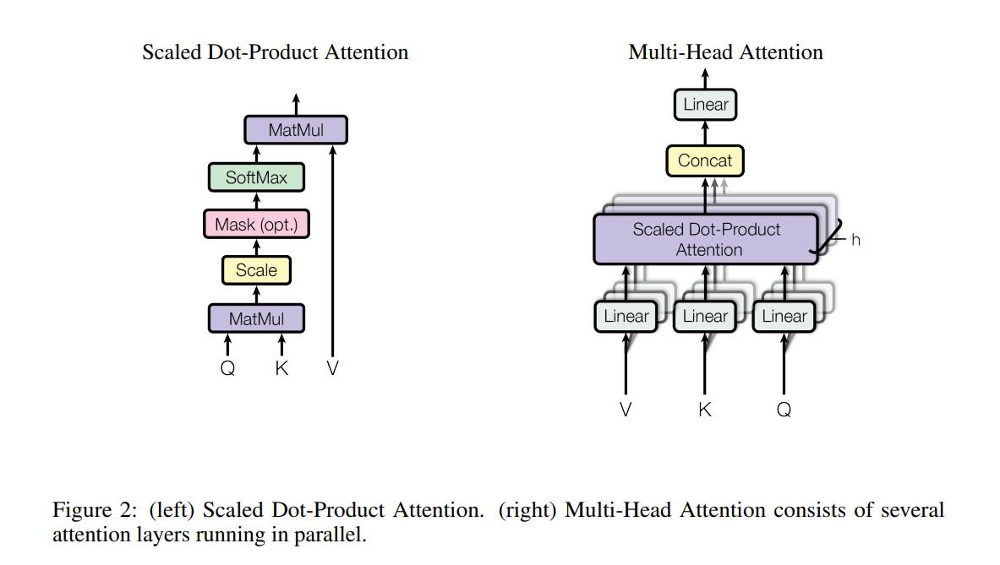左图的mask指对于 和 及其之后计算的那些值换成一个非常大的负数，如-1e10，进入softmax时会变成0，output时只用了对应的 到 。
multi-head attention:
与其做一个单个的注意力函数，不如把query、key、value投影到低维，投影h次，再做h次的注意力函数，把每一个函数的输出并在一起，再投影回来得到最终的输出
右图，V,K,Q先进入线性层，就是投影到低的维度，再做左图的scaled dot-product attention。这里做h次，会得到h个输出。再把这些向量全部合并再一次，再做一次线性的投影回到multi-head attention。
如果只是左图，没有什么可学的参数。为了识别不同的模式，希望有一些不一样的计算像素的方法。
如果用的是加性的注意力机制，里面还是有参数可以学的，也许还是可以学到这些东西。
右图的方法中投影的w矩阵是可以学的。像卷积神经网络中有多个输出通道
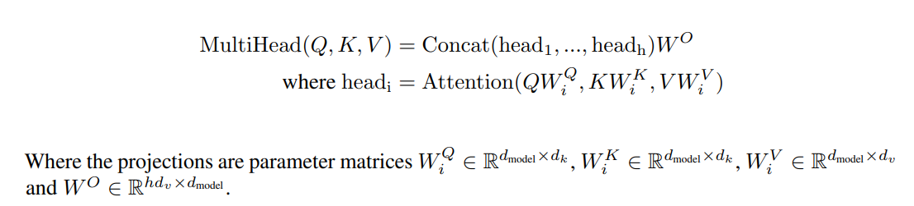是可以学习的，把Q,K,V投影到d维上再做注意力函数
因为有残差连接，输入输出大小一样，这里投影的时候就投成输出的维度除以h
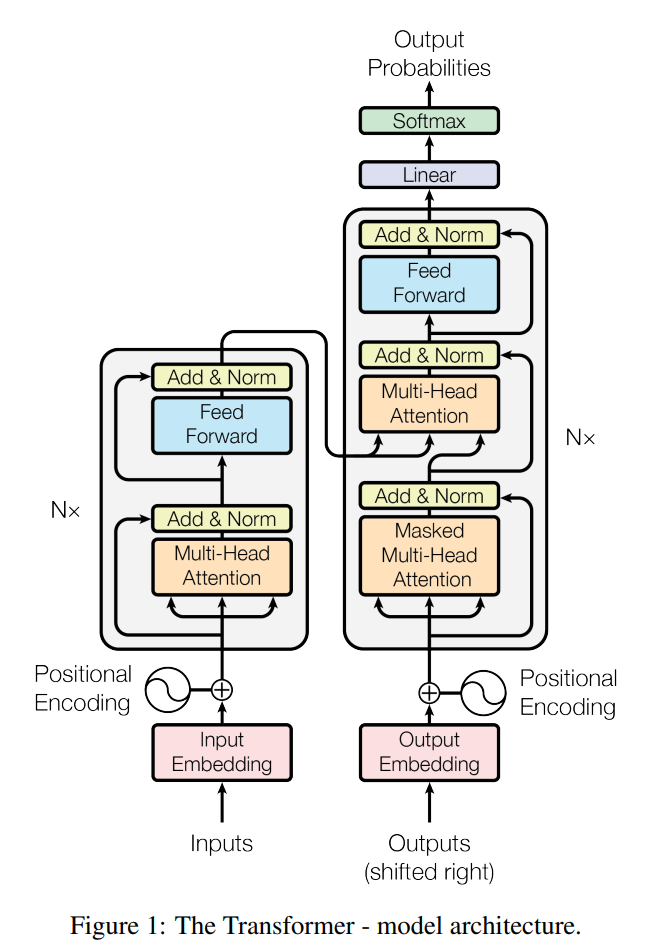三个不一样的注意力层
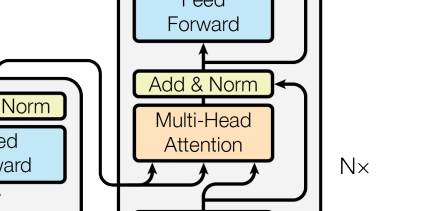这一层的key和value来自编码器的输出，query来自解码器下一个attention的输入
编码器的输出是n个长为d的向量，解码器的下面一层masked multi-head attention的输出也是n个长为d的向量
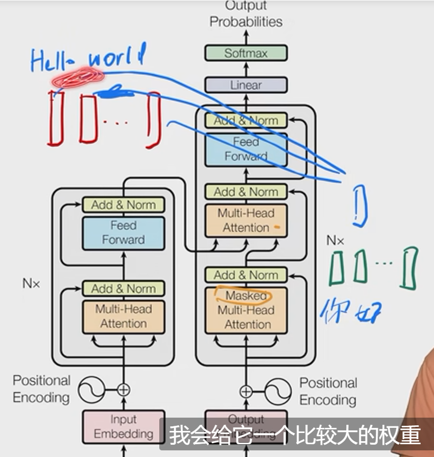绿色的作为query
这个attention干的事情就是有效地把编码器的一些输出根据我想要的东西拎出来
3.3节讲的是蓝色的feed-forward
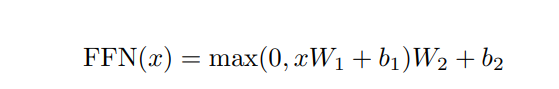对每一个词作用相同的MLP，就是point-wise
线性层+relu+线性层
W1把512投影成2048，W2又把2048投影成512
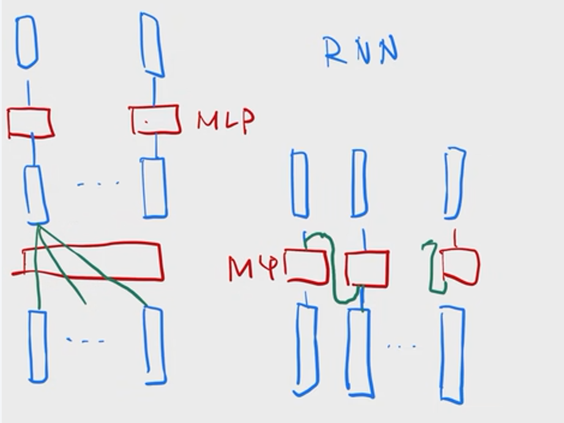 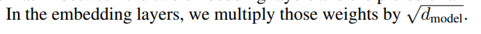把权重乘了根号 。因为在学embedding时会把每一个向量的L2-norm学成相对比较小的，如1，不管维度多大。但之后要加positional encoding，它不会随着长度变长把norm固定住。所以乘根号 后，使两者在scale上差不多
positional encoding 在输入中加入时序信息
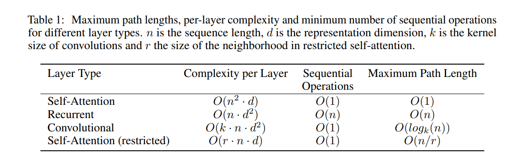Sequential Operations衡量并行度
Maximum Path Length表示信息从一个数据点走到另外一个数据点要走多远（越短越好）
self-Attention(restricted)指只和最近的r个做query
attention对模型的假设更少，导致需要更多的数据更大的模型才能训练出来
transformer的模型比较大
实验：
用的是37000个token的一个字典，而且是在英语和德语之间共享的，不再为英语构造一个字典，不再为德语构造一个字典。好处是整个编码器和解码器的embedding可以用一个，模型更加简单。即编码器和解码器的embedding是共享权重的
对模型做正则化：
residual dropout：对每一个子层，就是多头注意力层和之后的MLP层，每个层的输出之后，在他进入残差连接之前和在进入layer norm之前，用了dropout，dropout率是0.1，也就是把这些输出的10%的那些元素只乘0.1，剩下的乘1.1。在词嵌入加positional encoding时也用了dropout。使用了大量dropout层。
label smoothing：用softmax去学一个东西的时候，让正确的label的softmax值逼近于1，但sofymax很难逼近于1，因为softmax是一个很soft的东西，当输出无限大时，才能逼近于1.可以让正确的那个softmax值往下降一点，这篇中降得比较大，降到了0.1，即置信度0.1就行。但模型不那么确信，可以提升精度和BLEU的分数